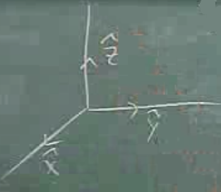
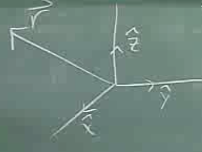

Konumuz Kısmi Türevsel Denklemler (partial differential equations -PDE-). Bu dersin ön gerekliliklerinden en önemlisi normal diferansiyel denklemlerdir (ordinary differential equtions -ODE-), çünkü pek çok PDE'yi çözmenin tekniği onları bir ODE sistemine indirgemekten geçiyor. Yani PDE çözmek için ODE çözme tekniklerini de bilmek gerekiyor. Bir diğer gerekli bilgi Lineer Cebir dersi.
Bu dersin ana amacı, bir mühendislik dersi olarak, denklem çözmek, ve pek çok denklemin çıkış noktası fiziksel problemler. Mesela sıcaklık yayılması (heat diffusion), dalga hareketi (wave motion), titreşen hücre zarı (vibrating membrane) gibi. Fakat PDE kavramı finansta bile ortaya çıkabilen bir kavram, mesela Black-Sholes denklemlerinde olduğu gibi.
Yani dersimiz çok teori odaklı olmayacak, bazı ispatlardan bahsedeceğiz, ama onun haricinde teori üzerinde fazla durmayacağız.
PDE nedir? İlk önce ODE tanımından başlayalım.
$$ y = y(x) $$
$$ \frac{dy}{dx} = y $$
Başlangıç şartları
$$ y(0) = y_0 $$
Çözüm
$$ y = y_0e^x $$
Bu bir ODE çünkü sadece bir tane bağımsız değişken var ($x$), ve bir tane bağımlı değişken var ($y$).
PDE ise içinde kısmi türevleri, ve bir veya birden fazla bağımsız değişkeni barındıran bir denklemdir.
Eğer güneş etrafındaki yörüngeleri temsil etmek istiyorsanız gezegenleri boyutsuz parçacıklar gibi kabul ederek ODE'ler ile temsil etmek yeterli olabilir, ama diğer problemlerde daha fazla bağımsız değişken gerekeceği için ODE yetmez, mesela zaman, cismin 3D uzaydaki boyutları gibi.
Mesela bir PDE
$$ u = u(x,y) $$
Çoğunlukla problem tanımının ilk başında fonksiyonel ilişkiyi hemen göstermek iyi olur, mesela üstte bağımsız değişkenler $x,y$, ve $u$ bu iki değişkene bağımlı. Devam edelim, PDE şöyle olsun
$$ \frac{\partial^3 u}{\partial x^3} + \cos(y)\frac{\partial u}{\partial y} + 3 = 0 $$
Bir PDE problemine çoğunlukla ek olarak sınır koşulları (boundary condition -BC-) ve başlangıç koşulları (initial conditions) eklemek de gerekir.
Kısmi Türev nedir?
$$ u = u(x_1, x_2,...,x_n) $$
$$ \frac{\partial u}{\partial x_i} = \lim_{\Delta x_i \to 0} \frac{ u(x_1,..,x_i+\Delta x_i,x_{i+1},...,x_n) - u(x_1,..,x_i,x_{i+1},...,x_n)} {\Delta x_i} $$
Yani bir fonksiyonun kısmi türevini almak istediğimiz değişken haricinde tüm diğer değişkenlerinin sabit tutulduğu bir durum.
Örnek
$$ u = x_1^2 + x_1\sin(x_2) $$
$$ \frac{\partial u}{\partial x_1} = 2x_1 + \sin(x_2) $$
$$ \frac{\partial u}{\partial x_2} = x_1 \cos(x_2) $$
Notasyon
Çoğunlukla kısmi türevler 3 farklı şekilde gösteriliyor.
$$ \frac{\partial u}{\partial x} \equiv u_x \equiv \partial_x u $$
Üstte soldaki tanımı gördük, bazen ortadaki de tercih edilebiliyor, ya da bazen en sağdaki.
PDE Derecesi
Bir PDE'nin derecesi, o denklemdeki kısmi türevlerin en yüksek dereceli olanın derecesi neyse o'dur.
Mesela
$$ u_{xxx} + u_y = 5 $$
derecesi 3. Aynı zamanda bu lineer ve homojen olmayan (inhomogeneous) bir PDE. Bu son iki kavramı birazdan tanımlayacağım.
Örnek
$$ (u_{xx})^2 + u_xu_y = u $$
Bu 2. derece. Bu bazı insanların kafasını karıştırıyor, çünkü $u_{xx}$'in karesi var. Bu aynı zamanda homojen, ve gayrı lineer. Bu dersteki çoğu PDE lineer olacak.
Lineer ve gayrı lineerlikten bahsetmişken, şunu ekleyelim.
Şimdi diyelim ki bir girdi (input) fonksiyonu $I(t)$ bir işleme giriyor ($L$ operatörü) ve çıktı (output) olarak $R(t)$ çıkıyor. Yani sistem
$$ R = \mathcal{L} \ I $$
Bir lineer sistemde eğer girdiyi iki ile çarparsanız, çıktı da iki katına çıkar. O zaman kurallar
$\mathcal{L}(\alpha I) = \alpha \ \mathcal{L}(I)$, ki $\alpha$ bir sabit.
$\mathcal{L}(I_1 + I_2) = \mathcal{L}(I_1) + \mathcal{L}(I_2)$, ki buna üst üste eklenebilme (superposition) prensibi deniyor. Bu prensibi bu dersteki çoğu PDE'yi çözmek için kullanacağız. Bir lineer sistem varsa çoğu zaman arka planda bir yerlerde üst üste eklenebilme prensibi geziniyordur.
Diyelim ki PDE'nizi şöyle yazdınız
$$\mathcal{L}u = f(\vec{x}) $$
Burada $u$ bağımlı değişken, $\vec{x}$ bir vektör, $\vec{x} \in \mathbb{R} ^n$, ve bu vektörün içinde birden fazla değişken var, bu değişkenlerin hepsi bağımsız.
$$ \vec{x} = \left(\begin{array}{r} x_1,\\ .. \\ x_n \end{array}\right) $$
Bu denkleme benzer bir diğer denklem lineer cebirdeki $A\vec{x} = \vec{b}$ denklemidir. PDE sisteminde de cevabını aradığımız, lineer cebir sisteminde "$A$ ile çarpılıp $b$ sonucunu verecek $\vec{x}$ hangisidir?" sorusuna benzer bir şekilde "$\mathcal{L}$ operatörü uygulanıp $f(\vec{x})$ sonucunu verecek $u$ hangisidir?" sorusudur.
Bu analojiden devam etmek gerekirse, belli bir noktada $u$'nun içinde olduğu "fonksiyon uzayı" hakkında düşünmemiz gerekebilir, $\vec{x}$'in içinde olduğu $\mathbb{R}^n$ uzayı gibi. Lineer cebir durumunda operatörün özelliklerine bakılır, mesela " $b$'nin içinde olduğu ve $A$ operatörü uygulanıp hiç sonuç alınamayacak uzayın belli kısımları var mıdır?" gibi sorularla uğraşılabilir, bunlar $A$'nin "ulaşamadığı yerlerdir" vs. PDE'deki $\mathcal{L}$ operatörü için de benzer sorular sorulabilir.
Yani lineer cebirle pek çok kavram PDE dünyasına benziyor, orada vektör uzayı var, burada fonksiyon uzayı var. Yani bir analoji olarak bu benzerliği aklımızda tutmamız faydalı.
Bir operatör şu şekilde de olabilir
$$ \mathcal{L} = \mathcal{L} \bigg( \frac{\partial }{\partial x_1}, \frac{\partial }{\partial x_2},.., u,.. \bigg) $$
Yani operatör kısmi türevlere ve hatta $u$'nun kendisine de bağımlı olabilir.
Eğer elimizde gayrı lineer bir PDE var ise, başımız dertte demektir. Böyle bir sistemi çözmek için çoğunlukla sayısal çözümlere başvurmak gerekir. Eğer lineer ise çözümde bayağı ilerlemek mümkündür.
Lineerlik
Bir operatör ve onun tanımladığı bir üst üste eklenebilme durumu düşünelim
$$ \mathcal{L} = \mathcal{L}(\alpha_1 u_1 + \alpha_2 u_2) = \alpha_1 \mathcal{L}u_1 + \alpha_2 \mathcal{L}u_2 $$
ki $\alpha_1,\alpha_2$ birer tek sayıdır (scalar), ya reel, ya da kompleks.
Örnek
Birazdan bakacağımız denklem dalga denklemi. Orada
$$ u_{tt} - c^2u_x = 0 $$
Bu denklemi
$$ \mathcal{L}u = 0 $$
şeklinde yazabiliriz ki $\mathcal{L}$ şöyle tanımlı olacaktır
$$ \mathcal{L} = \frac{\partial^2}{\partial t^2} - c^2 \frac{\partial ^2}{\partial x^2 = 0}$$
$c$ bir sabittir.
Şimdi diyelim ki şu denklemi çözmemiz lazım
$$\mathcal{L} u = f $$
ki
$$ \mathcal{L}: V \to V $$
Yani, $\mathcal{L}$ bir vektör uzayını bir diğerine eşlemekte (map), ve yine diyelim ki bu uzaylar birer Hilbert Uzayı (bunun anlamına şimdi bilmemiz gerekmiyor, ileride bu konuya döneceğiz, bu kelimeyi şöyle bir ortaya atmak istedim).
Yani sorduğumuz Hilbert Uzayı $V$'de bir $f$'e eşleyecek bir $u$ fonksiyonu olup olmadığı. Bu arada tipik bir Hilbert Uzayı mesela kare alıp bir sınır bölgesinde (boundary domain) entegre edince elde edilen sonlu (finite) bir sonuçların oluşturduğu uzay. Yani "derli toplu" fonksiyonlar bir anlamda, absürt sonuçlar vermeyen türden, sonsuzluğa doğru patlayıp giden türden olanları değil.
Faraziyeye devam edelim, diyelim ki $V$ içinde bir baz (basis) var. Baz nedir? Lineer cebirden hatırlayalım, mesela üç boyutlu Öklitsel (Euclidian) uzayı $\mathbb{R}^3$.

$$ \vec{x} = \left[\begin{array}{r} 1 \\ 0 \\ 0 \end{array}\right] $$
$$ \vec{y} = \left[\begin{array}{r} 0 \\ 1 \\ 0 \end{array}\right] $$
$$ \vec{z} = \left[\begin{array}{r} 0 \\ 0 \\ 1 \end{array}\right] $$

Bu uzaydaki herhangi bir vektör $\vec{r}$ üstteki üç baz vektörü kullanılarak parçalarına ayırılabilir, ya da, onların bir lineer kombinasyonu olarak gösterilebilir. Mesela
$$ \vec{r} = x\vec{x} + y\vec{y} + z\vec{z} $$
Bu üç vektörün bu uzay için bir "baz oluşturduğu" söylenebilir, çünkü bu uzaydaki her vektör bu üç vektörün bir kombinasyonu olarak temsil edilebilir. Dikkat edelim, iki baz vektör yeterli olmazdı, dört taneye gerek yok. Tamı tamına üç tane vektör bu uzayın bazını oluşturuyor.
Bu sonlu (finite) miktarda bir uzay, herhangi bir vektörü tanımlamak için sonlu miktarda baz vektörü yeterli. Sonsuz boyutlu bir uzay da olabilirdi, o zaman herhangi bir fonksiyonu tanımlamak için sonsuz tane baz vektörü gerekirdi. Mesela Fourier Serilerini düşünelim
$$ u = \sum_{i=1}^{\infty} \alpha_i \phi_i(x) $$
ki baz fonksiyonlar $\bigg\{ \phi_i(x) \bigg\}_{i=1}^\infty$.
Bu fonksiyonların her biri trigonometrik fonksiyonlar olabilir (cos, sin) gibi, o zaman seri Fourier Serisi olur. Her halükarda, yukarıdaki tanımla diyoruz ki özgün (unique) $\alpha$ değerleri var ki, o değerleri zaten önceden bilinen baz fonksiyonları ile çarpıp toplayarak $u$'yu oluşturabiliyoruz.
Eğer lineer operatörümüzü hatırlarsak
$$ \mathcal{L} = \mathcal{L}(\alpha_1 u_1 + \alpha_2 u_2) = \alpha_1 Lu_1 + \alpha_2 Lu_2 $$
Bu operatör herhangi iki katsayıyı kullanıyordu, fakat iki üstteki sonsuz tane toplamı da içerecek şekilde genişletilebilir, ve baz kavramı ile üst üste eklenebilme kavramının arasındaki alakayı gösterir.
Diyelim ki $\mathcal{L}$'nin her baz vektörünü nasıl eşlediğini biliyoruz,
$$ \mathcal{L} \phi_i = -\lambda_i \phi_i $$
Üstteki ifade $\phi$'in $L$'in özfonksiyonu olduğunu söylüyor aynı zamanda. Eğer alttaki açılımı yaparsak, ki bunu yapabiliriz çünkü $\phi$'ler bazdırlar,
$$ \mathcal{L}u = \mathcal{L} \bigg( \sum_i \alpha_i \phi_i(x) \bigg) = \sum_i \alpha_i \bigg( \mathcal{L} \phi_i \bigg) $$
$$ = -\sum_i \alpha_i \lambda_i \phi_i $$
Bir operatörün herhangi bir baz üzerinde nasıl işlem yaptığını anladığımız anda, o zaman $\mathcal{L}$'in herhangi bir $u$ fonksiyonu üzerinde ne etki yaptığını bilebiliriz. Diğer bir deyişle bir uzayda sonsuz tane fonksiyon olabilir, ama biz operatörümüzün bazlara nasıl etki ettiğini biliyorsak, o bazlarla oluşturulan tüm fonksiyonlara nasıl etki ettiğini de biliyoruz demektir.
Tekrar belirtelim, bu sadece $\mathcal{L}$ lineer bir operatör olduğu zaman mümkün.
Örnek
Klasik Burger denklemi
$$ u_t + u u_x = v u_{xx} $$
Denklemi
$$ \mathcal{L}u = 0 $$
olarak yazabiliriz, ki
$$ \mathcal{L} = \frac{\partial }{\partial t} + u \frac{\partial }{\partial x} - v\frac{\partial ^2}{\partial x^2} $$
Bu gayrı lineer
Örnek
$$ u_{xx} + u_{yy} + \sin(u) $$
$$ \mathcal{L} u = 0 $$
$$ \mathcal{L} = \partial_{xx} + \partial_{yy} + \sin(\cdot) $$
Üsttteki ilginç bir durum sinüs fonksiyonun da içi boş halde, operatör olarak kullanılmış olması. Operatör tanımında bazen böyle nokta konulduğu oluyor, ki neyin üzerinde operasyon yapıldığı anlaşılsın diye, mesela üstteki şöyle de gösteriliyor bazen
$$ \mathcal{L} = \partial\cdot_{xx} + \partial\cdot_{yy} + \sin(\cdot) $$
Bu da gayrı lineer çünkü $\sin$ fonksiyonu lineer değil, yani
$$ \sin(u_1 + u_2) \ne \sin(u_1) + \sin(u_2) $$
Lineerlik üzerinde çok duruyoruz çünkü diferansiyel denklemimiz hakkında bilmemiz gereken en önemli bilgilerden / ipuçlarından biri bu, çünkü denklemimizin lineer ya da gayrı lineer olması, bizi çok farklı çözüm teknikleri kullanmaya itecek.
Bir diğer önemli terim homojen (homogeneous), homojen olmayan (inhomogeneous) kavramı.
Homojenlik
Eğer $u=0$ bir çözüm ise PDE homojendir.
Yani $\mathcal{L} u = f(\vec{x})$ denklem tanımında eğer $f(\vec{x})=0$ ise PDE homojendir.
Ornek
$$ u_{xx} + u_y^2 = xu $$
Denklem 2. derece, gayrı lineer çünkü bir kare var, ve homojen çünkü $u=0$'in bir çözüm olduğunu görebiliyoruz.
Örnek
$$ u_x^2 + u_y = 6y \sin\bigg(\frac{x^3}{5}\bigg) $$
PDE 1. derece, gayrı lineer, ve homojen değil.
Soru
Bağımsız değişkenlere bağlı bir lineer operatör olabilir mi?
Cevap
Evet. Mesela $u=u(x,y)$, ve denklem $xu_x + u_y = u$.
Bu homojen bir denklem, ve $\mathcal{L} u = 0$ olarak gösterilebilen bir denklem, ve
$$ \mathcal{L} = x\frac{\partial }{\partial x} + \frac{\partial }{\partial y} - 1 $$
ve görüldüğü üzere operatör tanımında bağımsız değişken $x$ var.
Bu lineer bir operatör. Lineerliğin bağlı olduğu şey bağımlı değişkenler, bağımsızlar değil, mesela üstteki $x$, $x^3$ gibi bir şey olabilirdi ama problem hala lineer olurdu.
Sınır koşulları da bu bağlamda çok önemli, mesela diyelim ki tanımı lineer olan bir PDE var, ama problem tanımındaki sınır koşulları eğer fonksiyonun gayrı lineer bir kombinasyonunu içeriyorsa o zaman problemin tamamı gayrı lineer hale gelir.
Biraz formel olarak düşünürsek, mesela tek boyutlu ısı denklemi
$$ u_t = k u_{xx} $$
ki $x$ mesafe belirten değişken, $t$ zaman,

Bu denklem üstteki gibi bir borudaki ısının dağılımını, akışını gösteriyor olsun. $u|_{x=L}$ ile gösterilen bir sınır şartı, yani $L$ uzunluğundaki borunun en ucunda (sağındaki) olması şart olan ısı seviyesi. Mesela bu şart $u|_{x=L} = T_2$ olsun, ki $T_2$ bir tek sayı, $100^o$ , $200^o$ gibi. Şimdi homojenliğe ne oldu? Ana denklem homojen, ama homojenlik testini sinir şartına uyguladığımız zaman $0 = T_2$ gibi bir sonuç alıyoruz, ki bu absürt bir sonuç demek ki sınır şartı homojen değil. O zaman bu problemin tamamı homojen olamaz.
Benzer şekilde borunun öteki ucu için tanımlanan şart gayrı lineer olsa

ki bu şart o uçtan bir tür sinüsoidal bir enerji, ısı verildiği bir durumu tarif ediyor, o zaman ana denklem lineer olsa bile, sınır şartında gayrı lineerlik olduğu için problemin tamamı gayrı lineer olacaktır.
Aslında formel olarak sınır şartlarını alıp
$$ \mathcal{L} = \frac{\partial }{\partial t} - k \partial_{xx}$$
operatör tanımına bir şekilde dahil etmenin yolları var, ama biz bunlar çok ileri seviye teknikler, bu derste bu teknikleri görmeyeceğiz.
Başlangıç Şartları
Mesela yayılma (diffusion) denklemi $u(x,t)$ için $u(x,0) = f(x)$, yani başlangıç anında ısı dağılımının tüm boru boyunca hangi seviyelerde olduğunun (burada bu dağılım $f(x)$) belirtilmesi , başlangıç şartını tanımlamak demektir.
Genel bir kural PDE'deki türev sayısı kadar şart tanımlanması gerektiğidir. Mesela iki zaman türevi var ise, iki tane koşul gerekir, mesela $t=0$ anındaki bir koşul, artı zamana göreve türevin $t=0$ anındaki değeri, vs.
Şöyle düşünebiliriz, $u_{xx}$'in olduğu bir denklemde $u$ elde etmek için iki kere entegre edilir, ve bunun sonucu olarak iki tane entegrasyon sabiti ortaya çıkar, ki bu değerler herhangi bir sayı olabilir. O iki sabiti hesaplamak için iki tane koşul gerekecektir.
Genel kuralı daha somutlaştırırsak, "her bağımsız değişken için gereken sınır koşulu, o bağımsız değişkenin derecesine eşittir". Tabii bu genel bir kural, bazen gerçek dünyadaki fizik problemlerinde bu geçerli olmayabiliyor, bir problem için düzgün sınır koşulları bulmak başlı başına bir sanat denebilir aslında.
Ornek
Laplace denklemi
$$ \nabla^2 u \equiv \frac{\partial ^2u}{\partial x^2} + \frac{\partial ^2u}{\partial y^2} + \frac{\partial ^2u}{\partial z^2} $$
ki $\nabla^2$ Laplacian operatörü olarak bilinir.
Üstteki türden bir denklem hiç kaynak akım verilmeyen sonsuz uzayda elektrik potansiyeli alanını temsil ediyor olabilir.
Bu denklemin bir çözümün (ki sınır şartlarına dikkat edelim) şu şekilde olduğunu göstermek kolaydır:
$$ u(\vec{x}) = \frac{1}{\sqrt{x^2+y^2+z^2}} $$
Bu Potansiyel Teori'sinde tipik bir problem, bir alan değişkeni var, ve orijinden uzaklaştıkça bu değişken azalıyor, bu azalma $1 / $ uzaklığın karesi oranında.
Bu "bir" çözüm, fakat bir sürü 2. derece türev var ortalıkta, o zaman $x,y,z$'nin her türlü lineer fonksiyonu de aslında bir çözümdür. Mesela
$$ u(\vec{x}) = \alpha x + \beta y + \gamma z + \delta $$
formülü de bir çözüm olabilir. Niye? Herhangi bir lineer fonksiyonun iki kere türevini alırsak o fonksiyon yokolur.
Demek ki bu problemin tanımı eksik, sınır şartları da tanımlanması gerekli, aksi takdirde elde edilen sonuçlar özgün olmayacak. Envai türden çözüm mümkün.
Bu problem için tipik bir sınır koşulu $\lim_{|\vec{x}|\to \infty} u = 0$ ifadesidir. Elektrik alan örneğine dönersek, elektrik alanı sonsuzluğa giderken sıfıra düşüyor demiş oluyoruz. Bir sabite gidiyor da diyebilirdik, o da işlerdi.
O tür bir şart
$$ u(\vec{x}) = \frac{1}{\sqrt{x^2+y^2+z^2}} $$
sonucunu sağlardı, diğer seçenekleri elemiş olurdu. Bu örneği sınır koşullarının önemini belirtmek için seçtik, bu koşullar ana denklemin kendisi kadar önemli.
Bir nokta daha:
Şöyle bir ODE düşünelim
$$ \frac{du}{dt} = 1 $$
Entegre edince genel çözüm
$$ u(t) = t + c_1 $$
Fakat PDE için
$$ u = u(x,y) $$
$$ u_x = xy $$
Burada $y$ bazlı bir türev yok, basit bir PDE, çözmesi kolay, fakat unutmayalım, entegre edince
$$ u = \frac{1}{2}x^2y + [..] $$
Noktaların olduğu yere ne gelecek? Bir sayı sabiti değil bir fonksiyon gelecek.
$$ u = \frac{1}{2}x^2y + g(y) $$
çünkü $u$, $y$'nin bir fonksiyonu, o zaman elimize geçen $y$'nin herhangi bir fonksiyonu olacak, ki bu fonksiyonun değeri sinir koşulları üzerinden tanımlanmış olmalı. Bunu özellikle vurgulamak istedim çünkü insanlar bu detayı unutabiliyor.
Sınır koşulu nasıl olabilir? Mesela $u(\alpha,y) = f(y)$ şeklinde olabilir. Bu koşulu yerine sokunca
$$ \frac{1}{2}\alpha^2 y + g(y) = f(y) $$
Bu bize $g(y)$'in ne olduğunu söyler
$$ g(y) = f(y) - \frac{1}{2}\alpha^2 y $$
ve bu örnek için nihai çözüm
$$ u(x,y) = \frac{1}{2}x^2y + f - \frac{1}{2}\alpha^2 y $$
Tekrarlamak gerekirse
Bir Kısmi Türevsel Denklem (PDE) çok değişkenli bilinmeyen bir fonksiyon ve o fonksiyonun kısmi türevleri arasında kurulan bir ilişkidir.
Örnek
$$ u = u(x,t) $$
olmak üzere
$$ \frac{\partial u}{\partial x} + \frac{\partial u}{\partial t} = 0$$
denklemi bir PDE'dir. Çözüm bir tek sayısal sonuç değil, bir fonksiyondur. Düşünelim, mesela $f$ fonksiyonu tek değişkenli ve türevi alınabilir bir fonksiyon ise
$$ u(x,t) = f(x-t) $$
çözümdür diyebilir miyiz? Yani çözüm $f(x-t)$ olabilir mi? Kontrol edelim
$$ u_x = f'(x-t) $$
$$ u_t = -f'(x-t) $$
Bu iki kısmi türev toplanınca sıfır çıkar, yani sonuç üstte tanımlı PDE'ye uyar. Bu genel tanıma uyan bir sürü fonksiyon vardır, mesela
$$ u(x,t) = (x-t)^2 $$

$$ u(x,t) = e^{-(x-t)^2} $$

$$ u(x,t) = 3\sin(x-t) $$

Not: Burada $f$'i bir $f(z)$ olarak görebiliriz, bu fonksiyona $(x-y)$ geçiliyor, yani bir içiçe fonksiyon ortaya çıkıyor. O zaman üstteki formlar aslında $f(z) = z^2$, ve $e^{-z^2}$ şeklinde. Tabii kısmi türevler ile türev alınca Zincirleme Kanunu devreye girmelidir ve geçilen değerlerin, "fonksiyonların" da türevi alınmalıdır, vs.
Yani üstteki sonuç aslında diyor ki $x-t$ şeklinde hep beraber olmak üzere bu ikiliyi kullanan herhangi bir fonksiyon, üstteki PDE'nin çözümüdür. Bu şekilde çözüm birden fazla fonksiyon oluyor, ve bu çözüm fonksiyonlarının birbirinden ne kadar farklı olabildiği, göstermeye çalıştığımız noktalardan biri.
Üstteki PDE bir taşınım (convection) örneğidir, ve 1. seviye lineer homojen bir denklemdir. 1. seviye en yüksek türev seviyesinin seviyesine işaret eder, lineer homojen ise tüm çözümlerin lineer bir şekildeki kombinasyonu yine bir çözümdür anlamına gelir. Üstteki PDE için ne kadar çeşitli çözümler olabildiğini gördük, onların kombinasyonlarıyla bu çeşitlerin daha da artacağını düşünebiliriz. kıyasla şöyle bir ODE
$$ y' - y = 0$$
için çözümler
$$ y = Ae^x $$
denklemidir Tek bir çözüme indirgemek için başlangıç şartı mesela $y(0) =2$ veririz ve oradan tek çözüm $y = 2e^x$ buluruz.
Örnek PDE'miz için de, benzer şekilde, tek bir fonksiyonu bulmak için başlangıç, ya da sınır şartları koymalıyız.
Örnek
Örnek PDE çözümleri arasında hangisi x ekseni boyunca $u = e^{-x^2}$ şartını tatmin eder?
$u = e^{-x^2}$ demek, $u(x,0)$ demektir, çünkü $t$ yoktur. Çözümlerimizi teker teker gözden geçirirsek, $u(x,0)$ denklemi $u = e^{-x^2}$ olan çözüm
$$ u(x,t) = e^{-(x-t)^2} $$
çözümüdür. Görsel olarak durumu canlandırmak gerekirse, $t$'yi bir zaman değişkeni olarak kabul edelim, ve

her $t$ değerinde o anda $u$'nun $x$ üzerinde düşen yansımasının bir fotoğrafını çekiyoruz sanki, üstteki resimde soldaki $t=0$ anındaki mesela.
Devam edelim. Örnek 1 için bir sürü çözümden bahsettik ama bu çözümleri nasıl türettiğimizi söylemedik. Ayrıca bu örnekte "tüm mümkün çözümleri" bulup bulmadığımızı da söylemedik. Şimdi göstereceğimiz işlemler hakikaten tüm çözümleri bulduğumuzu gösterecek, ve akıllıca kullanılabilecek bir değişken değiştirme (change of variables) tekniğinin bir problemi basitleştirmekte nasıl faydalı olacağını anlatmaya uğraşacak.
Örnek
Üstteki PDE'yi lineer değişken değişimi kullanarak bir ODE'ye indirgemeye uğraşacağız. Diyelim ki
$$ \alpha = a x + b t $$
$$ \beta = cx + dt $$
Kısmi türevler $u_x$ ve $u_t$ şu şekilde genişletilebilir
$$ u_x = \frac{\partial u}{\partial \alpha}\frac{\partial \alpha}{\partial x} + \frac{\partial u}{\partial \beta}\frac{\partial \beta}{\partial x} $$
$$ u_t = \frac{\partial u}{\partial \alpha}\frac{\partial \alpha}{\partial t} + \frac{\partial u}{\partial \beta}\frac{\partial \beta}{\partial t} $$
İlk baştaki değişken değişimine göre bazı kısmi türevler şöyle:
$$ \frac{\partial \alpha}{\partial x} = a , \ \frac{\partial \alpha}{\partial t} = b, \ \frac{\partial \beta}{\partial x} = c , \ \frac{\partial \beta}{\partial t} = d $$
Bunları $u_x$ ve $u_t$ içinde yerlerine geçirirsek,
$$ u_x = \frac{\partial u}{\partial \alpha} a + \frac{\partial u}{\partial \beta} c \qquad (1) $$
$$ u_t = \frac{\partial u}{\partial \alpha} b + \frac{\partial u}{\partial \beta} d \qquad (2) $$
Üstteki iki kısmi türevi ana PDE'de yerine koyarsak
$$ \frac{\partial u}{\partial x} + \frac{\partial u}{\partial t} = 0$$
şöyle olur
$$ \frac{\partial u}{\partial \alpha} a + \frac{\partial u}{\partial \beta} c + \frac{\partial u}{\partial \alpha} b + \frac{\partial u}{\partial \beta} d = 0 $$
Benzer terimleri gruplayalım
$$ \frac{\partial u}{\partial \alpha} (a+b) \frac{\partial u}{\partial \beta} (c+d) = 0 $$
Şimdi öyle $a,b,c,d$ değerleri seçelim ki bir kısmi türev yokolsun. Mesela
$$ a = 1, b = 0, c=1, d=-1 $$
O zaman
$$ \frac{\partial u}{\partial \alpha} = 0 $$
kalır. Bu artık bir basit diferansiyel denklemdir, çözüm için entegral alırız,
$$ u = C(\beta) $$
Unutmayalım, sıfırın entegrali bir sabittir, ama $u$ birden fazla değişkene sahip olduğu için bu "sabitin" $\beta$ içermesi gerekir. $C(\beta)$, $\alpha$'ya göre bir sabittir.
$C(\beta)$'yi daha somutlaştıralım,
$$ \beta = cx + dt $$
demiştik, ayrıca $c=1,d=-1$. O zaman çözüm
$$ u = C(x-t) $$
Bu da başta bulduğumuz çözüm ile aynı zaten.